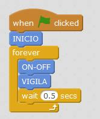
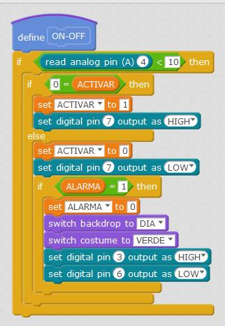
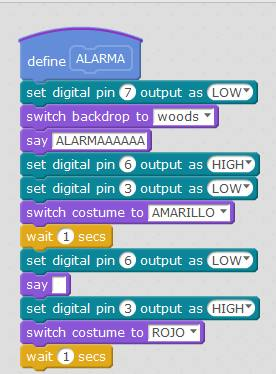
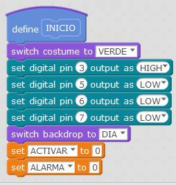
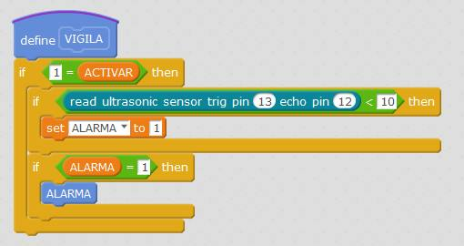

2.7 ALARMA
2.7.1 Conocimientos previos
2.7.1.1 SENSOR DISTANCIA POR ULTRASONIDOS

Este sensor mide las distancias utilizando el eco:
- Un ojo marcado con la T es un altavoz: Emite un sonido ultrasónico fuera de lo audible
- El otro ojo marcado con una R es un micrófono que detecta el pulso emitido por T.

Por software hay que calcular la distancia utilizando la fórmula v=e/t donde v es la velocidad del sonido.
Si quieres saber más de este sensor mira esta página de Luis Llamas.
2.7.1.2 POR QUÉ ELEGIMOS ESTE SENSOR DISTANCIA POR ULTRASONIDOS
Utilización en mBlock
Este sensor es muy preciso y direccional, su código en mBlock es muy sencillo:
Utilización en código.
En código este sensor implica mucho más código, lo puedes ver aquí, por eso en el apartado 3.7 LASER utilizaremos otra forma de hacer una alarma, con un láser y además un sensor de llama en 3.6 FUEGO.
Alternativas
Podriamos usar uno más profesional, por ejemplo DETECTOR DE MOVIMIENTO CON ARDUINO Y SENSOR PIR, pero su ángulo de sensibilidad es tan abierto que todo el rato se dispara. (un rollo si se utiliza en clase).
2.7.2 Objetivo
- Si se pulsa el botón de activación
- Si la alarma no está activada
- Activa la alarma, es decir está vigilando.
- Si la alarma está activada
- Desactiva la alarma, deja de vigilar.
- Si la alarma está disparada
- Anula el disparo y desactiva la alarma
- Si la alarma no está activada
- Si la alarma está activada:
- Está encendido el led verde para indicar que está vigilando.
- Si detecta un intruso a menos de 10 cm
- Se dispara la alarma, es decir se enciende la luz roja y el buzzer de forma intermitente, no se apaga hasta que se pulsa el interruptor.
OJO
Haremos un proyecto totalmente nuevo, debido a que mBlock no aguanta con todo, incluso este programa suele colgarse luego de vez en cuando hay que dar a Actualizar Firmware Ya lo comentamos en desventajas en el capítulo 2.1 Programando con mBlock
2.7.3 Conexiones
- Entradas y salidas digitales
- D3 Buzzer
- D5 Blue de led RGB
- D6 Red de led RGB
- D7 Green de led RGB
- D12 Echo del sensor de ultrasonidos
- D13 Trg del sensor de ultrasonidos
- Entradas y salidas analógicas
- A4 Pulsador
2.7.4 Video
2.7.5 Solución
El programa lo puedes descargar aquí
Haremos programación con bloques, este es el programa principal:

La activación o no de la alarma y la anulación del disparo:

El sonido de la alarma y la intermitencia del rojo

Al inicio hay que resetear todo:

El bloque de vigilar
